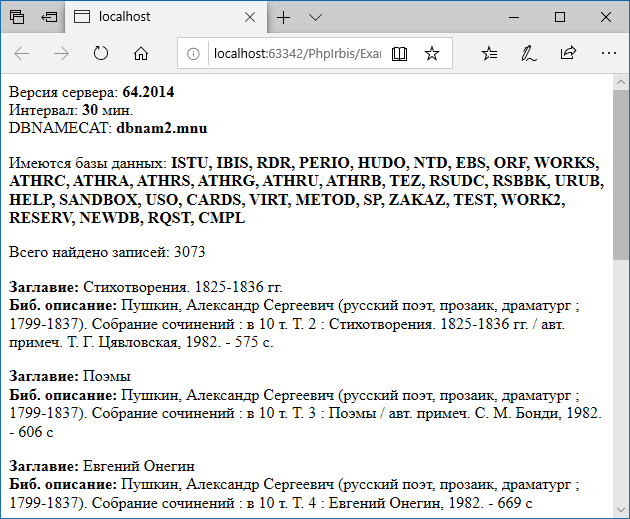

Библиотека PhpIrbis¶
Введение¶
PhpIrbis представляет собой простую библиотеку для создания клиентских приложений для системы автоматизации библиотек ИРБИС64 на языке PHP.
Пакет не содержит неуправляемого кода и не требует irbis64_client.dll. Успешно работает на 32-битных и 64-битных версиях операционных систем Windows, MacOS X и Linux.
Основные возможности пакета:
Поиск и расформатирование записей.
Создание и модификация записей, сохранение записей в базе данных на сервере.
Работа с поисковым словарем: просмотр терминов и постингов.
Администраторские функции: получение списка пользователей, его модификация, передача списка на сервер, создание и удаление баз данных.
Пакет состоит из одного файла PhpIrbis.php и зависит от трёх расширений: mbstring, json и sockets, входящих в стандартную поставку PHP. В операционной системе Linux с PHP 7 может потребоваться установить пакет php-mbstring с помощью системного пакетного менеджера, например, так:
sudo apt-get install php-mbstring
Поддерживается PHP, начиная с версии 5.4 (как 32-битные, так и 64-битные версии интерпретатора) и сервер ИРБИС64, начиная с 2014. Более ранние версии PHP будут выдавать ошибки, т. к. пакет использует языковые возможности, появившиеся в PHP 5.4. Аналогично обстоит дело и с более ранними версиями сервера ИРБИС64.
ВАЖНО В PhpIrbis предполагается, что системная кодировка символов PHP – UTF-8. В большинстве случаев это так, но если системная кодировка будет переопределена, то часть строк, участвующих в обмене с сервером, будет испорчена.
Установка¶
PhpIrbis можно загрузить с GitHub: [https://github.com/amironov73/PhpIrbis](https://github.com/amironov73/PhpIrbis). Подключение PhpIrbis к своему проекту в этом случае тривиально: достаточно скачать с GitHub файл PhpIrbis.php, положить его рядом с другими файлами с исходным кодом и сослаться на него, например, в директиве require или include:
require_once 'PhpIrbis.php';
Файл PhpIrbis.php содержит в себе весь необходимый код.
Однако предпочтительным способом является подключение библиотеки PhpIrbis с помощью Composer:

В файле composer.json достаточно добавить директиву require, ссылающуюся на пакет amironov73/phpirbis:
{
"name": "vendor_name/package_name",
"description": "description_text",
"require": {
"amironov73/phpirbis": "dev-master"
}
}
Composer создаёт в файле vendor/autoload.php автоматический загрузчик классов, которым можно воспользоваться так:
// подключаем сгенерированный загрузчик
require __DIR__ . '/../vendor/autoload.php';
$connection = new Irbis\Connection();
$record = new Irbis\MarcRecord();
// и так далее
Классы и функции пакета PhpIrbis помещены в пространство имён Irbis (см. предыдущий пример кода).
Примеры программ¶
Ниже прилагается пример простой программы. Сначала находятся и загружаются 10 первых библиографических записей, в которых автором является А. С. Пушкин. Показано нахождение значения поля с заданным тегом и подполя с заданным кодом. Также показано расформатирование записи в формат brief.
ВАЖНО! Обратите внимание, что PhpIrbis полагается на то, что исходные тексты программ записаны в системной кодировке UTF-8. Поэтому, если кодировка исходных текстов будет отличаться от ожидаемой, литералы будут искажены и программа может перестать работать.
Лучший вариант – избегать употребления в тексте программы литералов с национальными символами. В наших примерах такие литералы употребляются исключительно для простоты изложения.
require_once 'PhpIrbis.php';
try {
// Подключаемся к серверу
$connection = new Irbis\Connection();
$connectString = 'host=127.0.0.1;user=librarian;password=secret;';
$connection->parseConnectionString($connectString);
if (!$connection->connect()) {
echo "Не удалось подключиться!";
echo Irbis\describe_error($connection->lastError);
die(1);
}
// Общие сведения о сервере
echo "<p>Версия сервера: <b>{$connection->serverVersion}</b><br/>";
echo "Интервал: <b>{$connection->interval}</b> мин.<br/>";
// Из INI-файла можно получить настройки для клиента
$ini = $connection->iniFile;
$dbnnamecat = $ini->getValue('Main', 'DBNNAMECAT');
echo "DBNNAMECAT: <b>{$dbnnamecat}</b></p>\n";
// Получаем список доступных баз данных
$databases = $connection->listDatabases('1..' . $dbnnamecat);
echo "<p>Имеются базы данных: <b>" . implode(', ', $databases) . "</b></p>\n";
// Находим записи с автором "Пушкин"
$found = $connection->search('"A=Пушкин$"');
echo "<p>Всего найдено записей: " . count($found) . "</p>\n";
if (count($found) > 10) {
// Ограничиваемся первыми 10 записями
$found = array_slice($found, 0, 10);
}
foreach ($found as $mfn) {
// Считываем запись с сервера
$record = $connection->readRecord($mfn);
// Получаем значение поля/подполя
$title = $record->fm(200, 'a');
echo "<p><b>Заглавие:</b> {$title}<br/>";
// Расформатируем запись на севере
$description = $connection->formatRecord('@brief', $mfn);
echo "<b>Биб. описание:</b> {$description}</p>\n";
}
// Отключаемся от сервера
$connection->disconnect();
}
catch (Exception $exception) {
echo "ОШИБКА: " . $exception;
}
Вышеприведённая программа сгенерирует примерно такую веб-страницу:
В следующей программе создается и отправляется на сервер 10 записей. Показано добавление в запись полей с подполями.
require_once 'PhpIrbis.php';
try {
// Подключаемся к серверу
$connection = new Irbis\Connection();
$connectString = 'host=127.0.0.1;user=librarian;password=secret;';
$connection->parseConnectionString($connectString);
if (!$connection->connect()) {
echo "Не удалось подключиться!";
echo Irbis\describe_error($connection->lastError);
die(1);
}
// Записи будут помещаться в базу SANDBOX
$connection->database = 'SANDBOX';
for ($i = 0; $i < 10; $i++) {
// Создаем запись
$record = new Irbis\MarcRecord();
// Наполняем ее полями: первый автор (поле с подолями),
$record->add(700)
->add('a', 'Миронов')
->add('b', 'А. В.')
->add('g', 'Алексей Владимирович');
// заглавие (поле с подполями),
$record->add(200)
->add('a', "Работа ИРБИС64: версия {$i}.0")
->add('e', 'руководство пользователя');
// выходные данные (поле с подполями),
$record->add(210)
->add('a', 'Иркутск')
->add('c', 'ИРНИТУ')
->add('d', '2018');
// рабочий лист (поле без подполей).
$record->add(920, 'PAZK');
// Отсылаем запись на сервер.
// Обратно приходит запись,
// обработанная AUTOIN.GBL.
$connection->writeRecord($record);
// Распечатываем обработанную запись
echo '<p>' . $record->encode('<br/>') . '</p>';
}
// Отключаемся от сервера
$connection->disconnect();
}
catch (Exception $exception) {
echo "ОШИБКА: " . $exception;
}